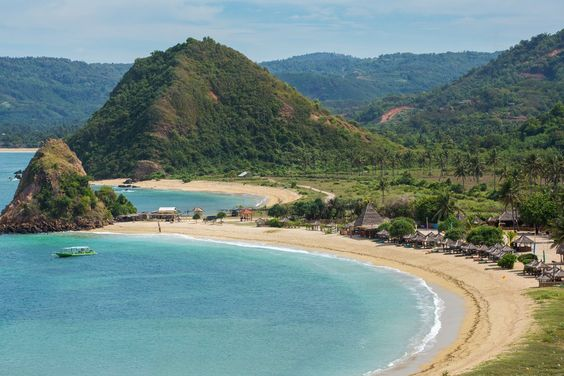

Pantai Kuta
Salah satu destinasi wisata populer di Indonesia yang tak boleh dilewatkan adalah Pantai Kuta. Pantai ini berlokasi di Bali, pusat destinasi wisata Indonesia. Pasir putih yang landai dan panjang membentang sepanjang garis pantai, air laut yang jernih, serta ombak yang besar membuat Pantai Kuta menjadi destinasi populer. Setiap pengunjung bisa mendapatkan pengalaman destinasi wisata yang tak terlupakan di sini. Di samping itu, kawasan sekitar Pantai Kuta juga menawarkan berbagai fasilitas, seperti hotel, restoran, dan penyewaan papan selancar, menjadikannya salah satu destinasi yang bisa dinikmati oleh banyak orang.
Selain pemandangan alamnya yang mempesona, Pantai Kuta juga memiliki nilai sejarah. Dulunya, Kuta hanya berupa desa nelayan yang sederhana, kemudian menjadi daerah padat penduduk saat ini. Pantai Kuta memiliki daya tarik tersendiri bagi para wisatawan, mulai dari berjemur, berenang, bermain voli pantai, hingga menyaksikan matahari terbenam yang menakjubkan. Selain itu, di sepanjang pantai juga terdapat banyak pusat perbelanjaan dan pasar seni yang menjual aneka kerajinan tangan Bali, semakin melengkapi produk wisata di Kuta.